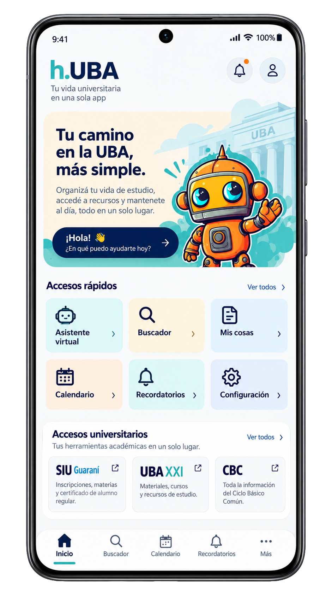

VISTA INTERACTIVA
Inicio
Navegación habilitada

Elegí una pantalla desde el menú o tocá los botones sobre el teléfono. También podés utilizar las flechas de navegación del navegador.

Elegí una pantalla desde el menú o tocá los botones sobre el teléfono. También podés utilizar las flechas de navegación del navegador.